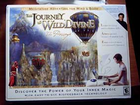
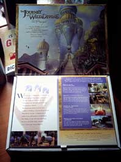
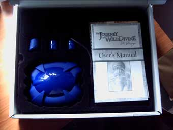

WilyWalnut.com
Meet the Genius in YOUR Brain!
Home- IQ Tests - Creativity - Genius - Brainstorming - Self-Help -- BLOG Diary of a First Time "Journey To The Wild Divine" UserMy experiences with the Journey To The Wild Divine: The Passage biofeedback game
September 18th 2006
10.01AM: The postman has
just brought the Journey To The Wild
Divine biofeedback package. I'm
excited and, surprisingly, a little nervous. I have
had this product in my consciousness for so long,
lingering there on my Want List, that I hope it lives up
to my expectations.
I rip into the package and stare at the Wild
Divine box cover. The mystical imagery looks as
inviting as ever, but will the graphics on the game
itself live up to it I wonder? I pause to snap some
pics for my review article, as I flip open the top lid
and see a wonderful big image of a bridge leading to a
fantastic temple. There is also some blurb on the game
and what I will be doing. Can't wait!

I open the main box section. Everything is
neatly stored away beneath a clear plastic lift-off
lid that encloses the moulded black plastic that
contains the biofeedback finger sensors, something
that they refer to as a Lightstone, the software
disks, companion guide book, instruction guide book,
CD of Wild Divine music, and bonus Deepak Chopra
CD.
Oh no! I have to go out and won't be able to
play this until later!

13.27PM: Hehehe! I just
sneaked my first go on the Journey To The Wild Divine
game. It's pretty cool. Already I
have been keeping juggling balls up in the air with my
energy levels, and lit a fire by relaxing deeper and
deeper with 'the peace breath'. The imagery is good. The
game is peaceful. That means if you are an A-type on the
go all the time, you are going to have to change gear
mentally and work with the game at the speed it
sets.
I feel more relaxed already. It's funny
though. I thought -- hey I will be really good at this
... I've done yoga, hypnosis and meditation so of
course I will be able to relax my mind at will really
easy. Er... not quite! I'm obviously a bit rusty and
living on 'former glories' where that is concerned.
The mind tunes down into relaxation or up into higher
states of energy. The Wild Divine biofeedback finger
pads monitors your heart rate and skin resistance. By
learning to slow down your heart beat (or speed it up)
and relax your skin resistance, you control the
different game tasks.
September 19th 2006
Just
clocked another half an hour of Wild
Divine. Basically you navigate your way
around this Shangri-La type of mountain temple,
instructed by different avatar guides, who lead you to
various biofeedback games where you have to control your
breathing in order to complete the game. I already
mentioned keeping juggling balls in the air. There are
other Wild Divine tests where you have to levitate
things like rocks and balance them one on top of the
other. I really like the Zen archery game found in the
Master's temple. With this one you have to use your
mouse to click on the bow string while the arrow is
drawn back, and then make the arrow rise or fall by
raising or lowering your energy until you get it
perfectly aimed at the bull's eye of the target. And
then you fire!
I only practiced Wild
Divine for half an hour today. To be honest, I am sneaking
in sessions when Mrs Walnut and Wily Jnr aren't around.
That's for two reasons. 1) I haven't told Mrs Walnut that I
bought it! Oops! 2) I don't really want to share it -- yet!
;-)
September 20th
2006:
Hey, I had a
lucid
dream last night! I'm pretty sure
it had something to do with Wild
Divine. I think it's that motion of exploring
through a mystical world. In the lucid dream, I suddenly
was on like a miner's trolley just going
through the swing door entrance to the mine, only it was
more like a rollercoaster ride through tunnels as there
was loud rap music playing and the red colors of the
walls and tracks were really vivid.
Have you ever had a lucid
dream? It's an amazing experience to suddenly become aware
that you are dreaming -- and to be fully awake within the
dream and able to make conscious choices about what you
want to do next. Unfortunately, this was my first lucid
dream for a few months, and being a bit rusty and that it
was near to getting up time, I woke up within seconds of it
starting. Still it seemed a good sign that the Wild Divine
game was having some immediate effects.
Another thing -- and this
is a little embarassing... I also found myself
spontaneously practicing the breathing techniques that were
taught in the Wild Divine game. They are supposed to help
you calm your heart rate and lower skin resistance and so
on. Well, guys, I can only say that when you want
to ... er... last a long time... (you get
me?) ... this biofeedback stuff that you learn in Wild
Divine is really effective for making you a 'master of
the bedroom arts'!
More to follow....
September 26th 2006: Well, apart from yesterday, when I was out all day, I've been on the Journey to the Wild Divine game every day. Some days, I've only managed a quick quarter of an hour or so, but that's been enough to progress the game to the next stage and try out some other biofeedback challenges. On the 21st, I found myself feeling quite euphoric for no apparent reason -- it was wonderful. I was walking along and suddenly noticed that I was feeling completely joyful and at peace with the world. I put it down to a combination of the Wild Divine and the goji berries that I had sprinkled on my breakfast. I couldn't think what else it could be! But it was very welcome! Being quite impatient, the Journey to the Wild Divine game has been challenging to me. I'm not an experienced 'gamer' and the navigating around and retracing your steps at the game's speed is frustrating when you first start. However, I have got the hang of the book marking feature now and that is a big help. I also hit the 'M' key frequently to look at the over-view map, so I can work out where I am and where I have to go next. There is a very nice music track on the Journey to the Wild Divine game. I especially like it when you take the magic carpet ride and this really joyous song comes on (fortunately there is a music track CD included with the game so you can listen 'offline' too). Today I spent about an hour and a half playing the Journey to the Wild Divine game. I can't help thinking that most people are not as time rich as I am and that the game format might not appeal to people who just want to get straight onto the biofeedback challenges and have a very focussed experience of training their mind power. The Wild Divine people have come up with the answer to those people in the form of their latest product, which is called 'Healing Rhythms'. I gather this latest program is much more focused on a specific, staged training biofeedback training. Anyway, I had a great time. I had the house all to myself and was able to really get into the Journey to the Wild Divine game. What I particularly notice is that the Wild Divine game forces me to persist and focus to a level that I wouldn't normally go to in normal relaxation periods. Unless I get into a very disciplined meditation, my mind is flighty and ill-disciplined and hops all over the place. With the various Wild Divine tests and challenges, I have to just push myself a little bit beyond my comfort level -- and that's proving very beneficial. I can see already that what you do and learn from practicing on the Journey to the Wild Divine game will become internalised. An example of that is that I was in the supermarket earlier, getting supplies, and it was full of really old people. And those old people were going very slowly, blocking the aisles by parking their trolleys sideways while they took great interest in peering at every single product label. They were all about 4 foot tall and slow as tortoises (bless 'em), whereas I am 6ft 2, and like to move fast and get in and get out of there. So I was starting to get a tad frustrated being hemmed in at every turn. But then I remembered this breathing exercise that I had done in the Journey to the Wild Divine game, and it was almost like the game screen popped up in my minds eye, and I imagined breathing and watching the biofeedback game as I had done before. I was soon calm and relaxed and able to watch the old people with a smile and affection. I guess this is making the journey to the Wild Divine?
GENIUS ARTICLES HOME IQ TESTS - CREATIVITY - GENIUS - BRAIN STORMING - SELF-HELP - BRAINTEASERS - WILY WALNUT
| ||
|


"Unleash Your Inner Genius For Creativity & Innovation!" Copyright 2001-2015 WilyWalnut.com SITE MAP